Babylon.js Coursework Documentation
Introduction
This coursework project was developed using Babylon.js to create interactive 3D environments inside a web browser. Each element introduced new features such as textures, terrain, physics, collisions, imported models, and player interaction systems.
The project was built using:
- HTML
- JavaScript
- Babylon.js
Element 1 – Basic Shapes and Scene Setup
Aim
The aim of Element 1 was to create a simple Babylon.js scene using primitive meshes, textures, lighting, shadows, and animation.
Features
- ArcRotateCamera
- Directional lighting
- Shadows
- Textured ground
- Cube and sphere meshes
- Animation system
Final Scene

Scene Setup Code

Babylon.js engine and scene setup with custom background colour.
Camera and Lighting


ArcRotateCamera and directional lighting used to control the scene view and create shadows.
Element 1 successfully demonstrates basic Babylon.js scene creation, textures, lighting, shadows, and animation.
Element 2 – Environment Creation
Aim
The aim of Element 2 was to create a larger outdoor environment using terrain, skyboxes, houses, and sprites.
Features
- Height map terrain
- Sky environment
- Tree and palm sprites
- Multiple houses
- Improved camera controls
Final Scene
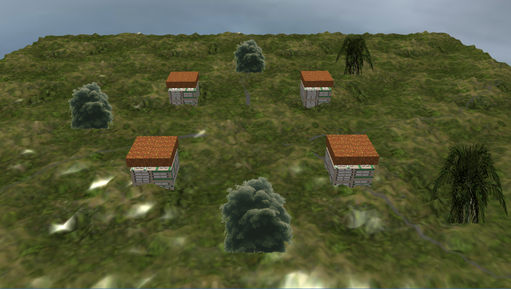
Large outdoor environment created using terrain, houses, trees, and sky textures.
Height map terrain used to create hills and landscape variation.

Sprites and Environment

SpriteManager used for trees and environmental objects to improve performance.
Element 3 – Interaction and Physics
Aim
The aim of Element 3 was to implement collisions, physics, imported models, player movement, and object interaction.
Features
- Physics engine
- Follow camera
- Imported player model
- Collision systems
- Keyboard movement
- Pushable physics box
Final Scene
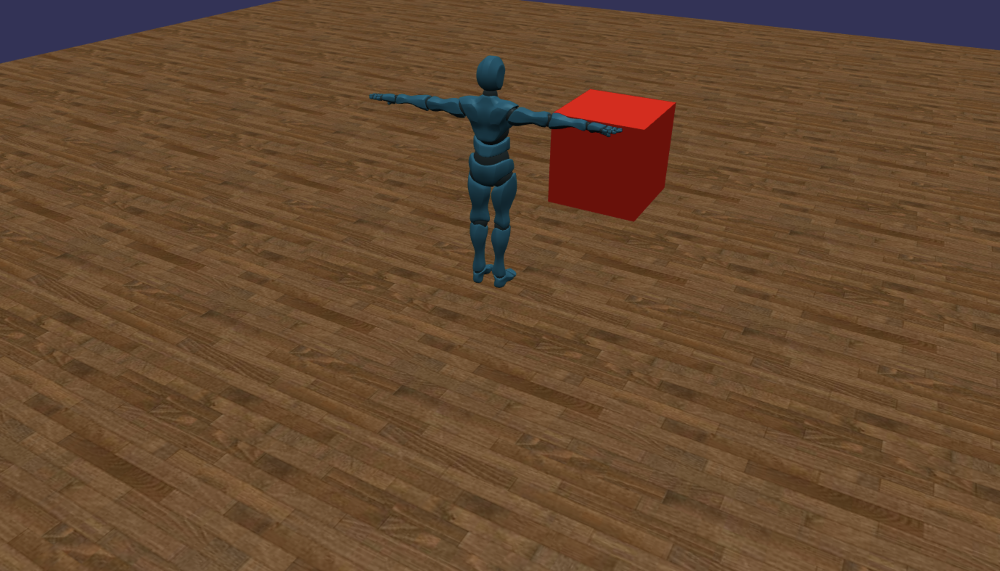
Physics and Collisions
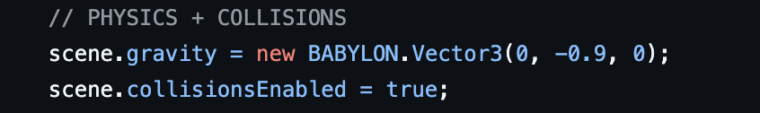
Gravity and collision detection were added so the player and objects can interact properly.
Character Import and Movement
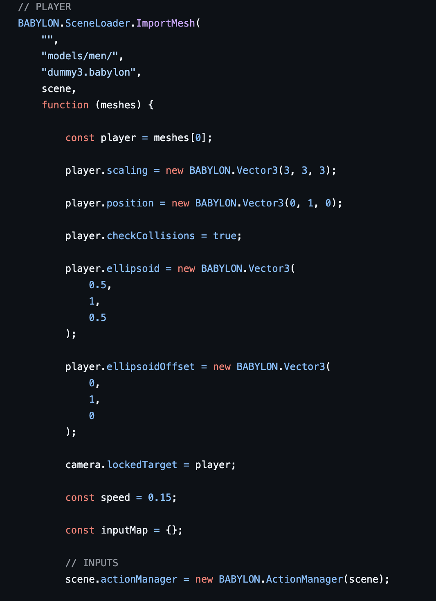
Movement Controls
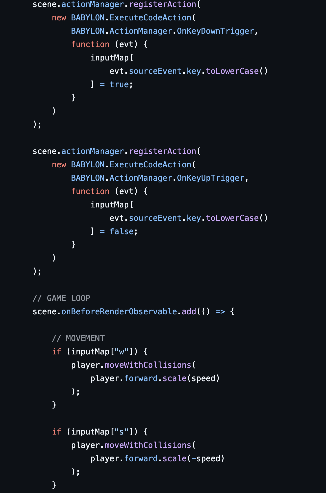
Keyboard input was added using ActionManager to move and rotate the player.
Push Box Physics
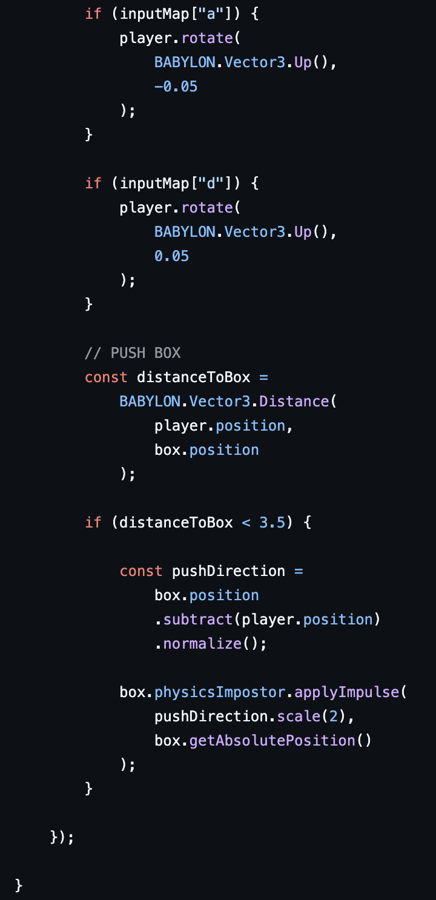
The player can push the physics box when close enough using impulses and collision detection.
The interaction system was successful because the player can move smoothly using keyboard controls and interact with physics objects in real time.
Element 4 – GUI, Audio, Logic
This element demonstrates GUI systems, movement logic, jumping, and health mechanics using Babylon.js.
Final Scene
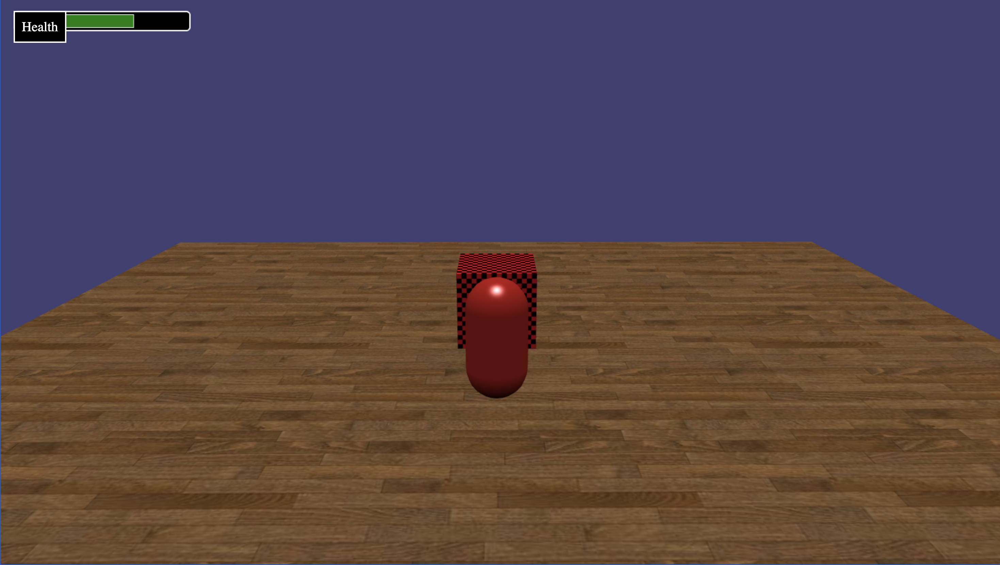
GUI – Health Bar
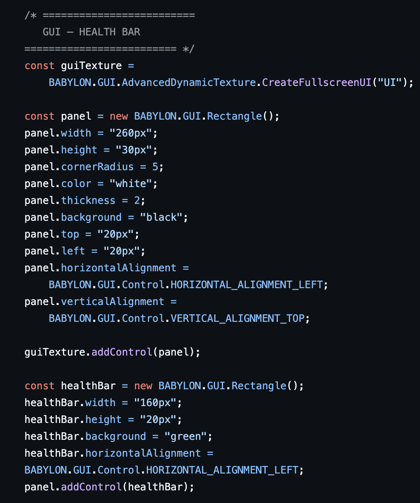
A GUI health bar was created using Babylon GUI controls. The health bar updates dynamically during gameplay.
Movement and Jump Logic
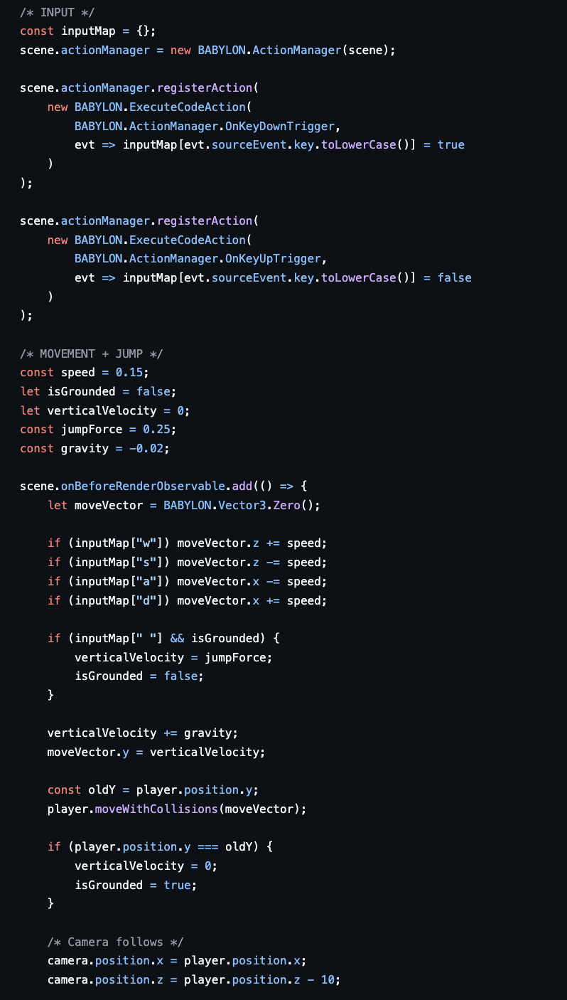
Keyboard input was implemented for movement and jumping using collision detection and gravity.
Health / Damage Logic
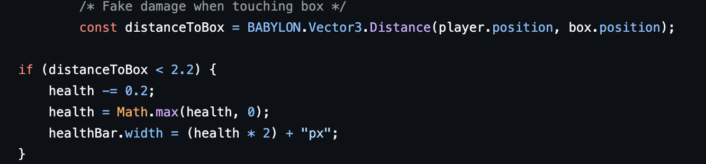
The player loses health when colliding with the obstacle, and the GUI health bar updates in real time.
The GUI and gameplay systems worked successfully. The player could move, jump, collide with objects, and lose health dynamically while the health bar updated correctly on screen.
Element 5 – Scene Switching
Element 5 demonstrates scene switching in Babylon.js.
Scene A Code
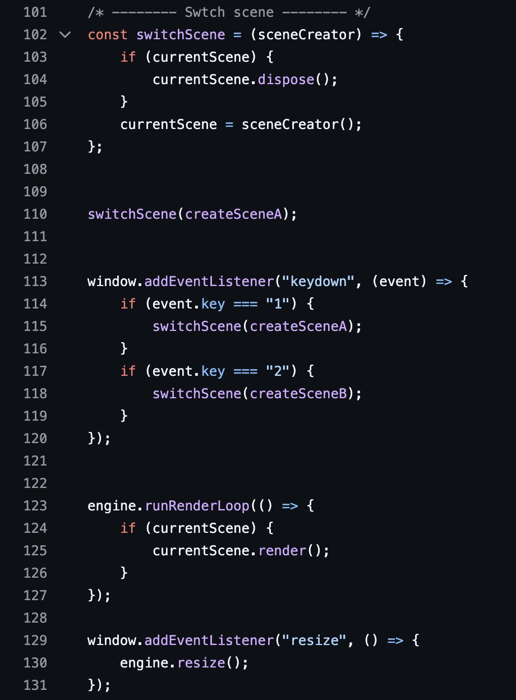
Scene A contains a rotating box with a green background and hemispheric lighting.
Scene B Code
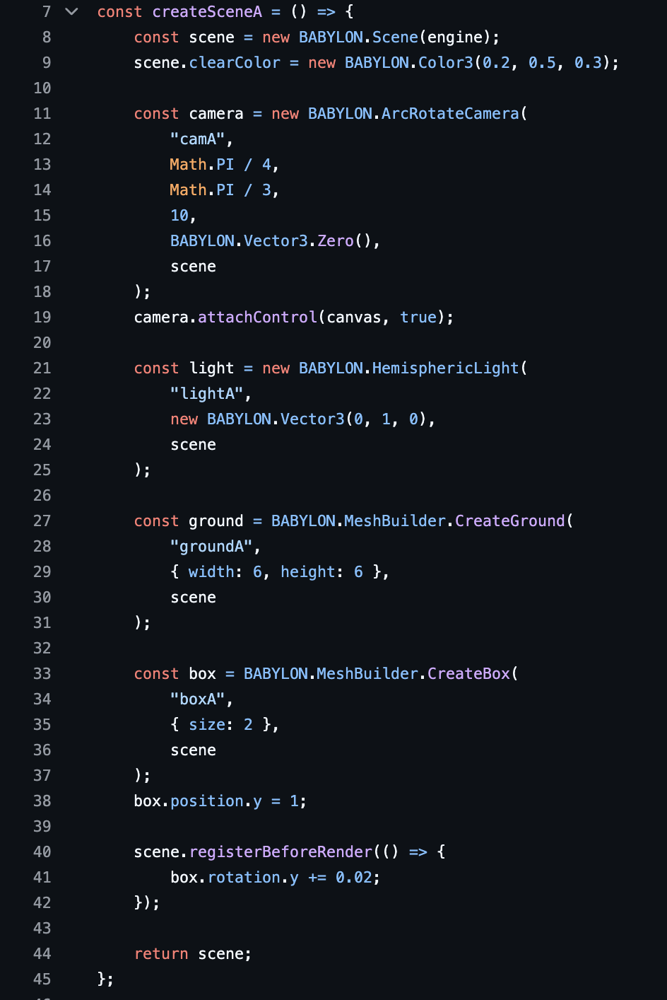
Scene B contains an animated sphere with directional lighting and GUI text instructions.
Scene Switching Logic
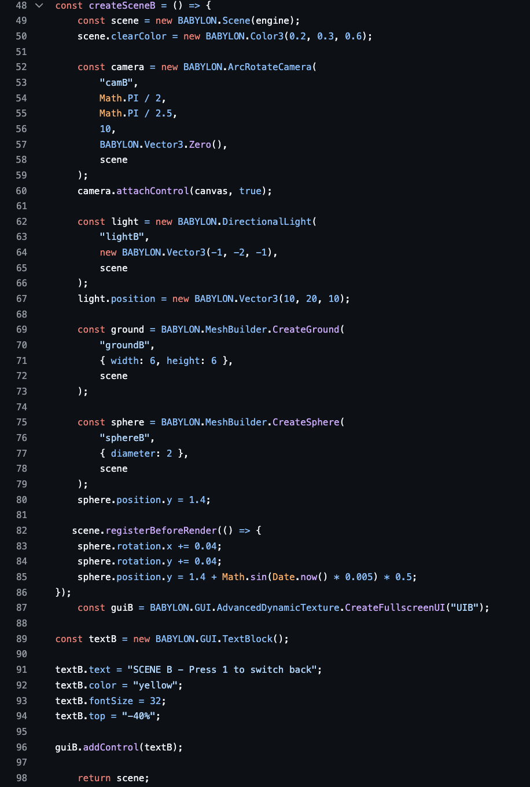
Keyboard input was implemented using event listeners:
- Press 1 switches to Scene A
- Press 2 switches to Scene B
The switchScene() function disposes of the current scene and loads the selected scene dynamically.
Scene A Result
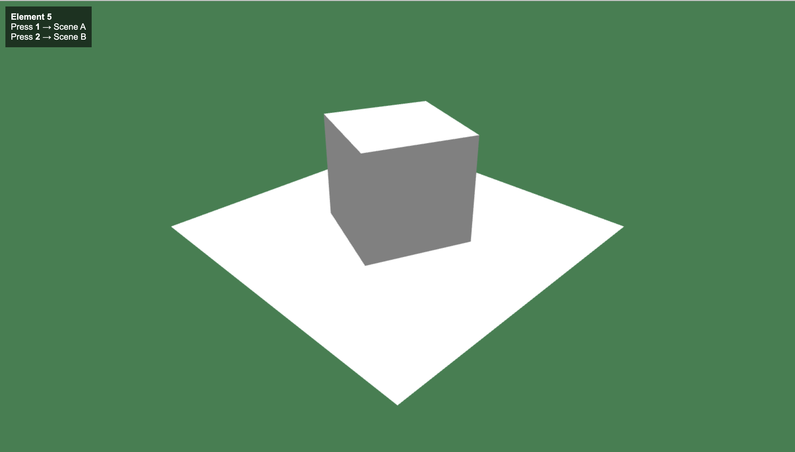
Scene B Result
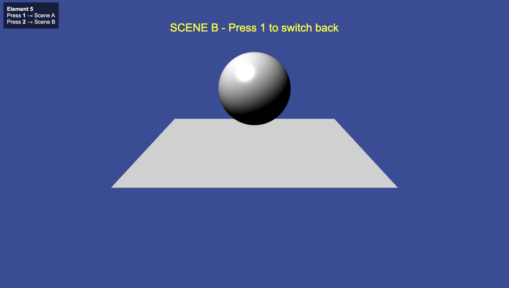
Scene switching worked successfully. Different objects, lighting setups, animations, and GUI elements were displayed correctly between both scenes.